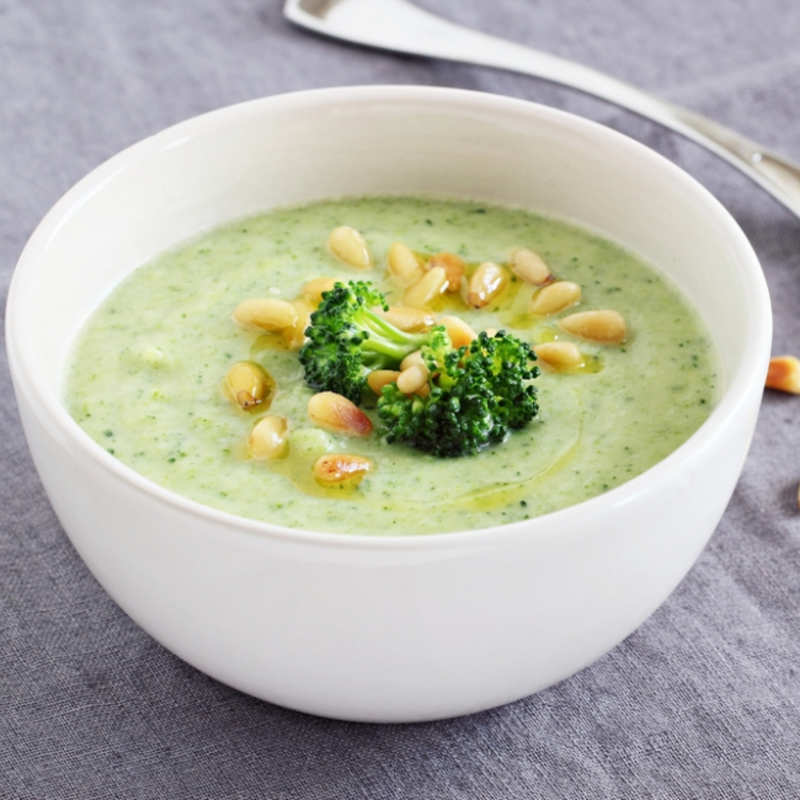

Potato Broccoli Soup

Creamy potato and broccoli soup.
Potato broccoli soup is a classic cold-weather soup with a creamy texture from the potatoes. Perfect for a winter evening with the family.
Ingredientes:
- Broccoli.
- Potatoes.
- Cream.
- Onions.
- Celery.
- Butter.
- Chicken broth.
- Two different cheeses.
Steps:
- Saute onion and celery in butter, add potatoes and broth. Cover and simmer, add broccoli, cover and cook again.
- Remove one cup of broccoli and potatoes; set aside.
- Using an immersion blender, blend remaining soup in the pot until smooth.
- Return everything to pot, stir in both cheeses until melted.